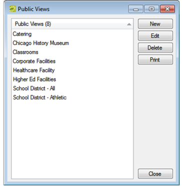
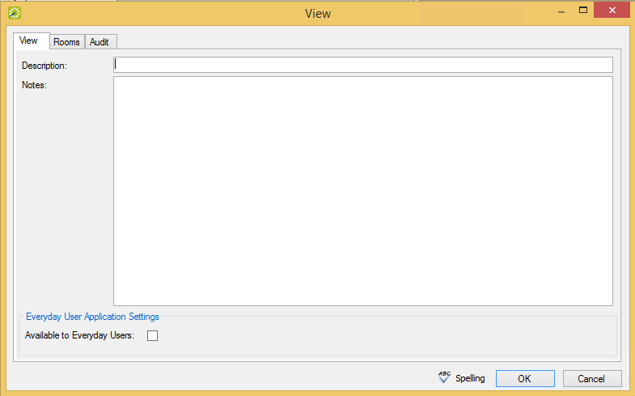
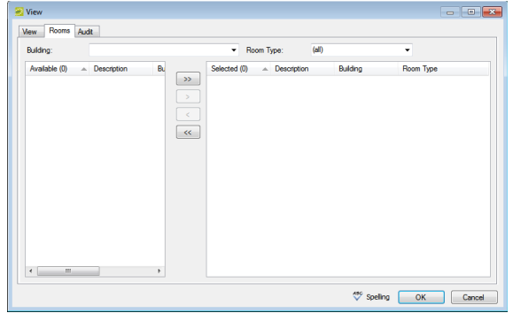

A public view, or simply a view, is a grouping of specific rooms that you configure. You use views to organize rooms within one building or across multiple buildings in a manner that makes sense for your organization. For example, you might create a view that includes only the training rooms across all your locations, or you might create a view to manage heavily used conference rooms within a building. A room can be part of multiple views. A user can select a view for changing the information that is displayed in the Reservation Book or for searching for rooms in the Reservation Wizard. A view can also be particularly useful for running reports.

Public Views Window

View Tab of the View Dialog
In the Description field, enter a name or description for the new view (maximum 50 characters, including spaces).
In the Notes field, you can enter any other pertinent information about the view. If you want

Rooms Tab of the View Dialog
You can click Spelling to spell check the view description before you save the view.